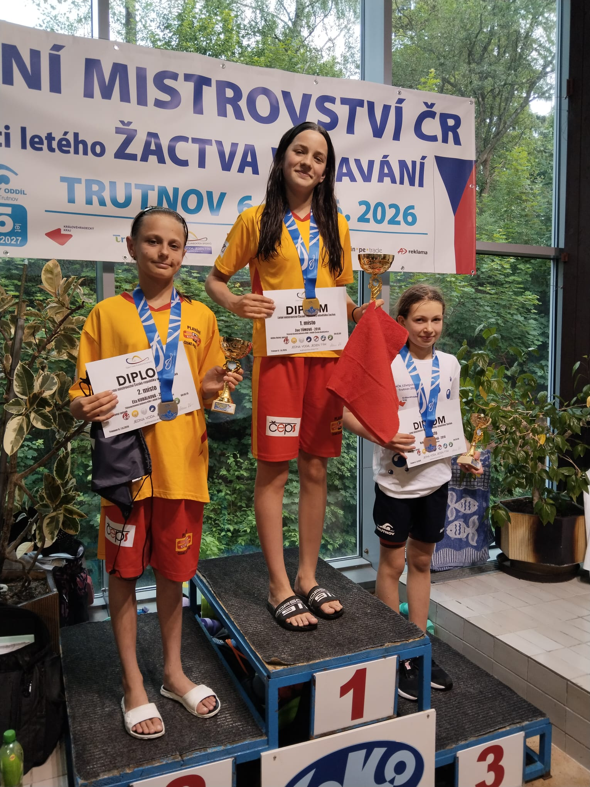
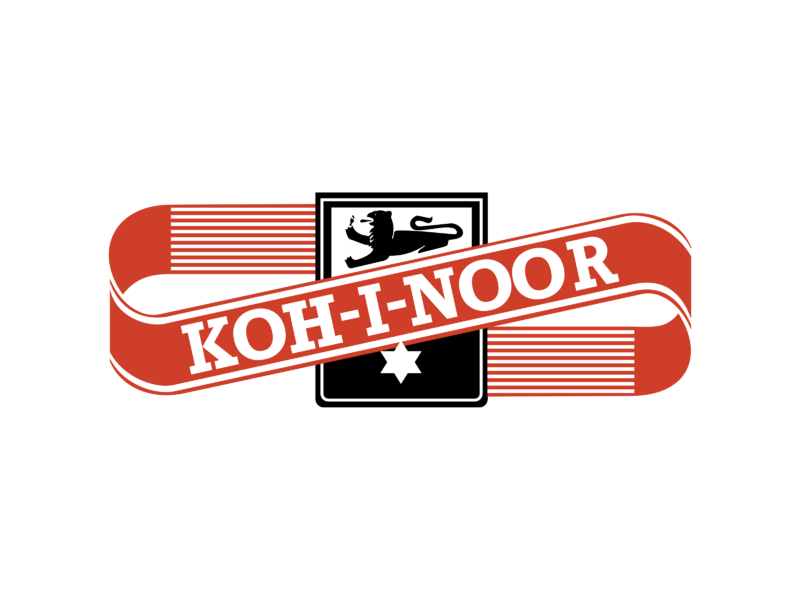
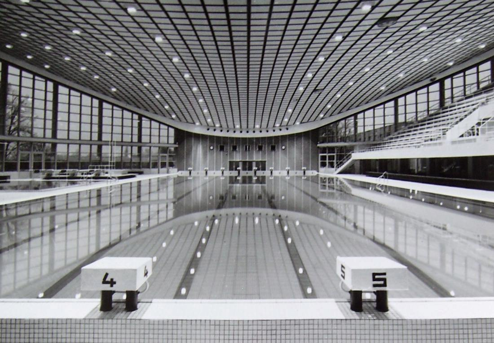
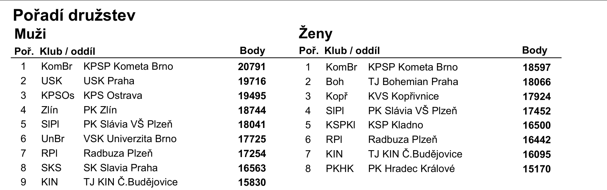
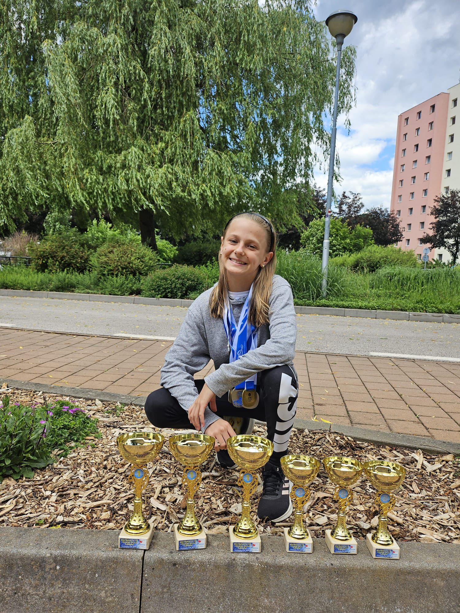

Od roku 1951 – nejstarší plavecký oddíl v Českých Budějovicích

Pod vedením Vlasty Potužníkové vzniká nový plavecký oddíl z učňů n. p. Koh-i-noor a žaček Matice školské. První trénink na Sokolském ostrově.

Nejmodernější plavecký areál ve Střední Evropě. Svého času unikát.
Postup mužského a ženského týmu do 1. celostátní Federální ligy. Historický okamžik jihočeského plavání.
Eva Šmausová zvolena předsedkyní plaveckých sportů, poté celé Tělovýchovné jednoty. Vede organizaci dodnes.

Historický dvojúspěch – KIN dosáhl finále ligové soutěže současně s mužským i ženským týmem.

Ela Kubálková vylepšuje rekord ČR na LMČR v Trutnově. Zoe Tůmová přidává tři zlaté medaile. Nejúspěšnější sezóna v novodobé historii oddílu.